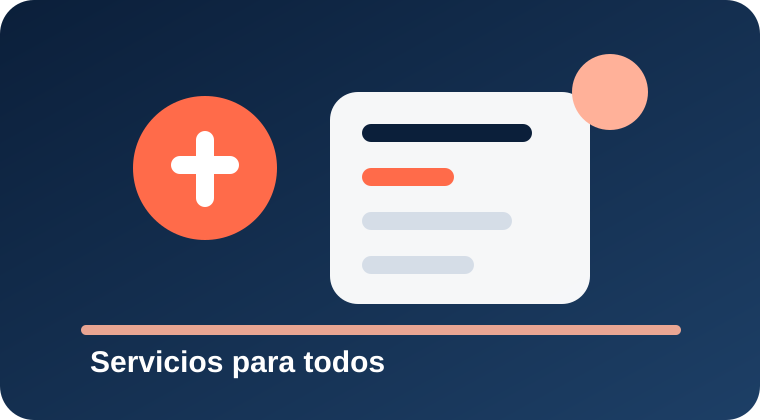

Baños
Sanitarios generales y accesibles ubicados cerca del hall central y las plataformas.
Ubicación: Hall central y sector andenesHorario: 24 h
RetiroConecta ofrece herramientas pensadas para mejorar la experiencia de viaje, garantizando comodidad, accesibilidad y navegación clara.
Actualización de recorridos y horarios.
Visualización de estaciones y conexiones.
Consulta de servicios y métodos de pago.
Recursos para una experiencia de transporte moderna, organizada y accesible.
Sanitarios generales y accesibles ubicados cerca del hall central y las plataformas.
Asistencia para consultar recorridos, horarios, plataformas y accesibilidad.
Cafeterías, kioscos y espacios de comida rápida para pasajeros.
Zonas señalizadas con asientos, carga de dispositivos y pantallas informativas.
Sector para autos particulares, taxis y ascenso o descenso rápido.
Servicio complementario de preguntas frecuentes para orientar al usuario dentro del sitio.
Plano orientativo de la terminal para identificar plataformas, andenes, accesos, baños, información, espera, gastronomía, estacionamiento y servicios complementarios.
Plataformas y andenes de salida.
Accesos peatonales y vehiculares.
Servicios para pasajeros y asistencia.
Servicio complementario para resolver dudas rápidas sobre la terminal sin salir de la página.
También podés consultar la propuesta individual de cada recorrido.
Movilidad urbana e interurbana con herramientas digitales, accesibilidad y navegación clara.

Responsive
Paradas
Accesible